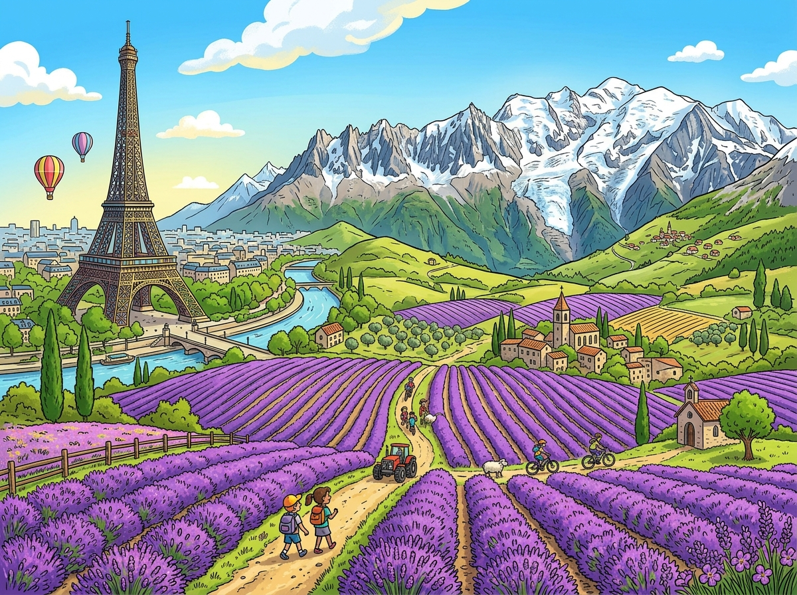
Hier stehen die wichtigsten Daten zu deinem Land. In der App baust du daraus deinen eigenen Steckbrief.
| Hauptstadt | Paris |
| Kontinent | Europa |
| Sprache | Französisch |
| Währung | Euro |
| Einwohner | etwa 69 Millionen Menschen |
| Fläche | etwa 550.000 km², das größte Land der Europäischen Union und ungefähr eineinhalb Mal so groß wie Deutschland |
| Großer Berg | der Mont Blanc, fast 4.810 Meter hoch, der höchste Berg der Alpen |
| Nachbarländer | Belgien, Luxemburg, Deutschland, Schweiz, Italien, Monaco, Spanien und Andorra |
In Frankreich gibt es viele berühmte Orte. Diese vier solltest du kennen.
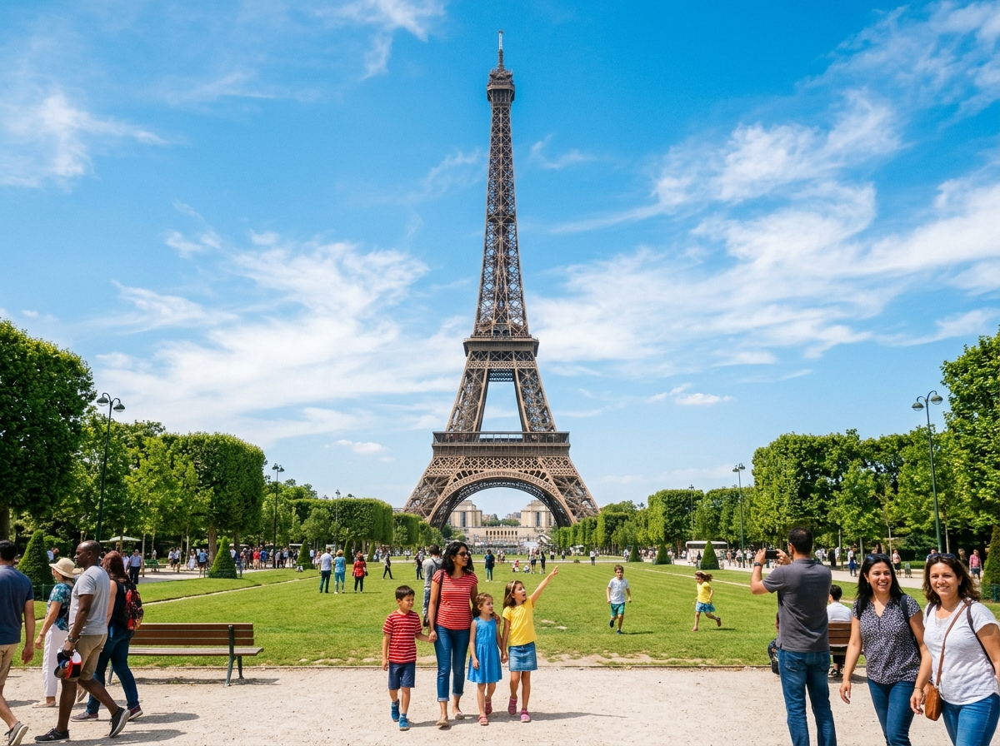
EiffelturmDer Eiffelturm ist das Wahrzeichen von Paris. Der riesige Turm aus Eisen ist 330 Meter hoch und wurde vor über 130 Jahren gebaut. Von ganz oben kann man über die ganze Stadt schauen. In der Nacht leuchtet er und funkelt.
Grüne Wörter für die AppWahrzeichenaus Eisen330 Meterin Parisleuchtet nachts
LouvreDer Louvre in Paris ist das größte Kunstmuseum der Welt. Dort hängen viele Tausend Bilder an den Wänden. Das berühmteste Bild der Welt ist hier zu sehen, die Mona Lisa. Vor dem Eingang steht eine große Pyramide aus Glas.
Grüne Wörter für die AppKunstmuseumin ParisMona Lisaberühmte BilderGlaspyramide
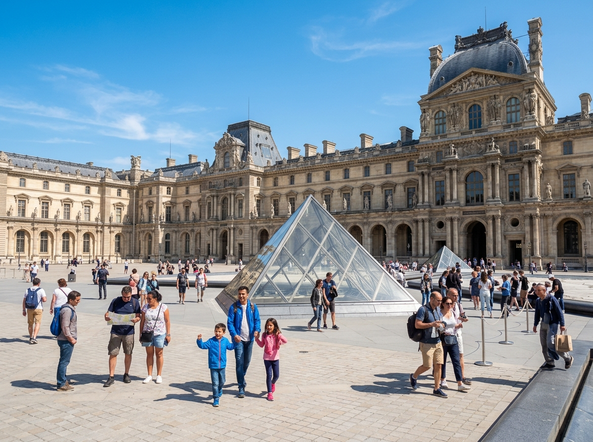
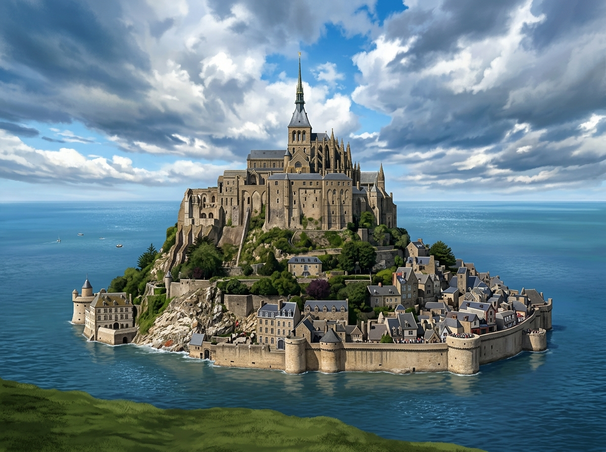
Mont-Saint-MichelDer Mont-Saint-Michel ist eine kleine Felseninsel im Norden Frankreichs. Auf dem Felsen steht eine alte Klosterburg. Bei Flut steigt das Wasser, und die Insel ist dann ringsum vom Meer umgeben. Bei Ebbe kann man wieder zu Fuß hingehen.
Grüne Wörter für die AppFelseninselKlosterburgim Nordenbei Flutvom Meer umgeben
Schloss VersaillesSchloss Versailles liegt westlich von Paris und ist riesig und prachtvoll. Früher lebten hier die Könige von Frankreich. Um das Schloss herum gibt es einen weiten Garten mit vielen Brunnen. Die Räume sind reich mit Gold geschmückt.
Grüne Wörter für die AppSchlossKönigegroßer GartenBrunnenmit Gold
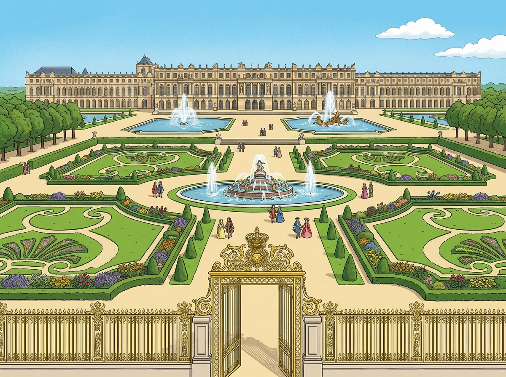
Diese Tiere leben in Frankreich und sind ganz besonders.
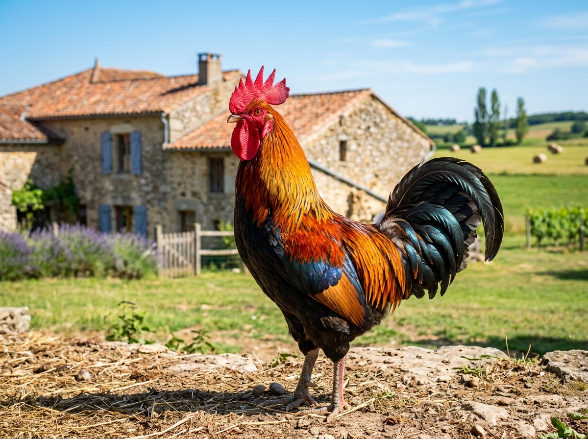
HahnDer Hahn ist ein nationales Symbol von Frankreich. Auf Französisch heißt er Coq. Er steht für Mut und Stolz. Auf vielen Trikots der Sportler ist ein kleiner Hahn zu sehen.
Grüne Wörter für die AppSymbolCoqMutStolzauf dem Trikot
FlamingoIm Süden Frankreichs liegt eine flache Sumpflandschaft, die Camargue. Dort leben viele rosa Flamingos. Sie stehen oft auf einem Bein im flachen Wasser und suchen Futter. Das Gebiet ist ein Naturschutzgebiet.
Grüne Wörter für die AppFlamingoCamargueim SüdenSumpfsteht auf einem Bein
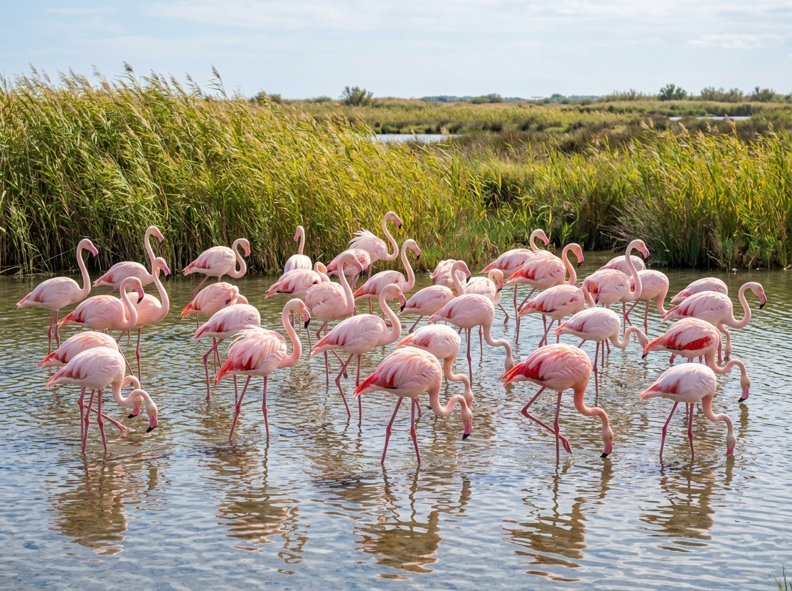
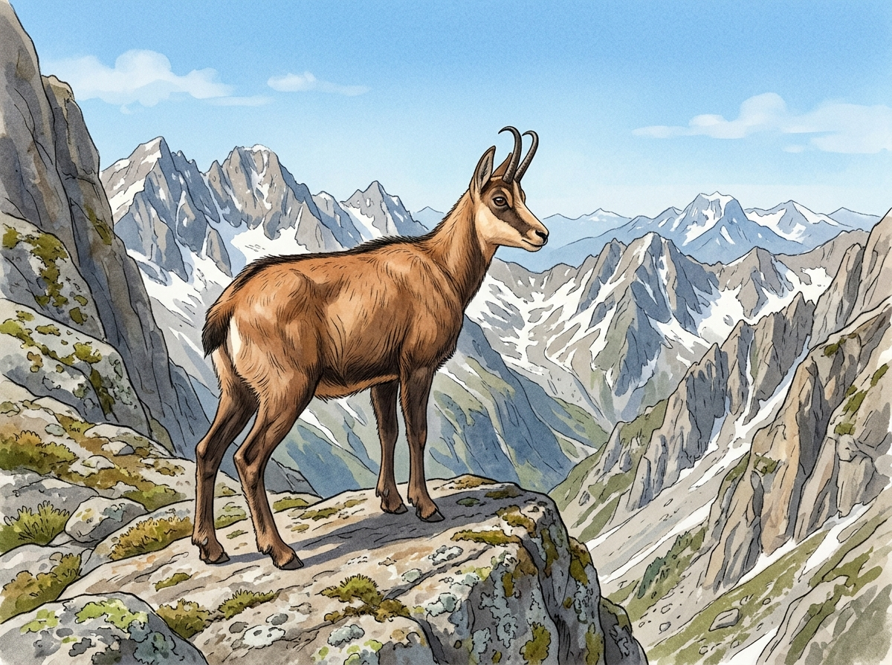
GämseIn den hohen Bergen der Alpen und Pyrenäen lebt die Gämse. Sie hat kleine, gebogene Hörner und ein dichtes Fell. Die Gämse kann sehr gut klettern und springt sicher über steile Felsen.
Grüne Wörter für die Appin den Bergenkleine Hörnerklettert gutAlpenspringt sicher
In der App kannst du beim Essen das Foto nehmen oder dein Gericht selbst malen.
BaguetteDas Baguette ist ein langes, dünnes Weißbrot. Es ist außen knusprig und innen weich. Fast jeden Tag kaufen die Franzosen ihr Baguette frisch beim Bäcker. Es ist das bekannteste Brot aus Frankreich.
Grüne Wörter für die AppWeißbrotlang und dünnknusprigvom Bäckerjeden Tag frisch
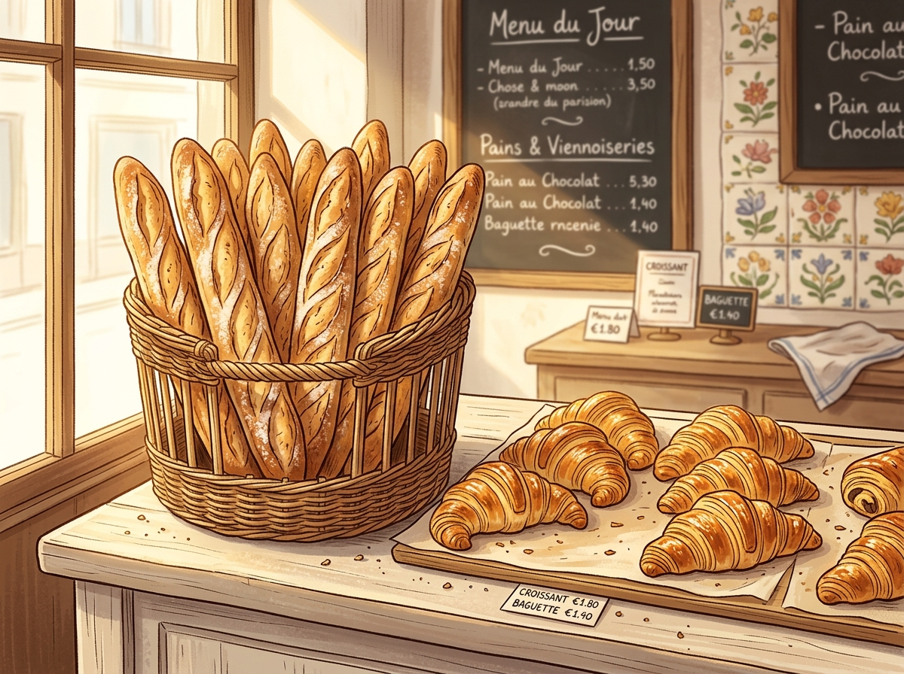
CroissantDas Croissant ist ein Gebäck aus viel Butter. Es hat die Form von einem Halbmond. Viele Menschen in Frankreich essen es morgens zum Frühstück. Frisch aus dem Ofen schmeckt es am besten.
Grüne Wörter für die AppGebäckButterHalbmondzum Frühstückam Morgen
CrêpesCrêpes sind hauchdünne Pfannkuchen. Man kann sie mit etwas Süßem füllen, zum Beispiel mit Schokolade, oder auch herzhaft mit Käse. Oft kauft man sie an kleinen Ständen auf der Straße.
Grüne Wörter für die Appdünne Pfannkuchensüß oder herzhaftSchokoladevom Standauf der Straße
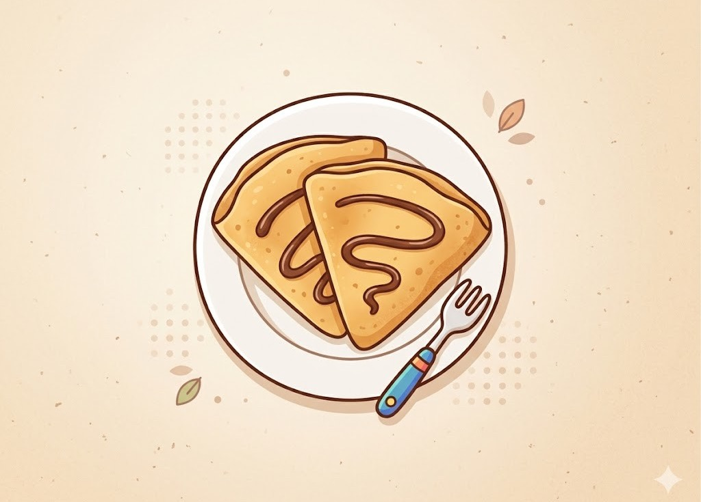
⚽ Gut zu wissen
Die Fußball-Nationalmannschaft von Frankreich heißt Les Bleus, das bedeutet die Blauen. Sie spielt im blauen Trikot. Frankreich ist bei der WM 2026 wieder dabei und gehört zu den stärksten Teams der Welt. Schon zweimal wurde das Land Weltmeister, 1998 und 2018.
Grüne Wörter für die AppLes Bleusblaues Trikotbei der WM 20262x Weltmeistersehr stark
🌟 Profi-Wissen
Der bekannteste Spieler ist Kylian Mbappé. Er ist sehr schnell und trifft viele Tore. Bei der WM 2018 war er erst 19 Jahre alt und schoss trotzdem wichtige Tore. Frankreich wurde 1998 und 2018 Weltmeister.
Grüne Wörter für die AppKylian Mbappéblitzschnell1998 Weltmeister2018 Weltmeister19 Jahre im Finale
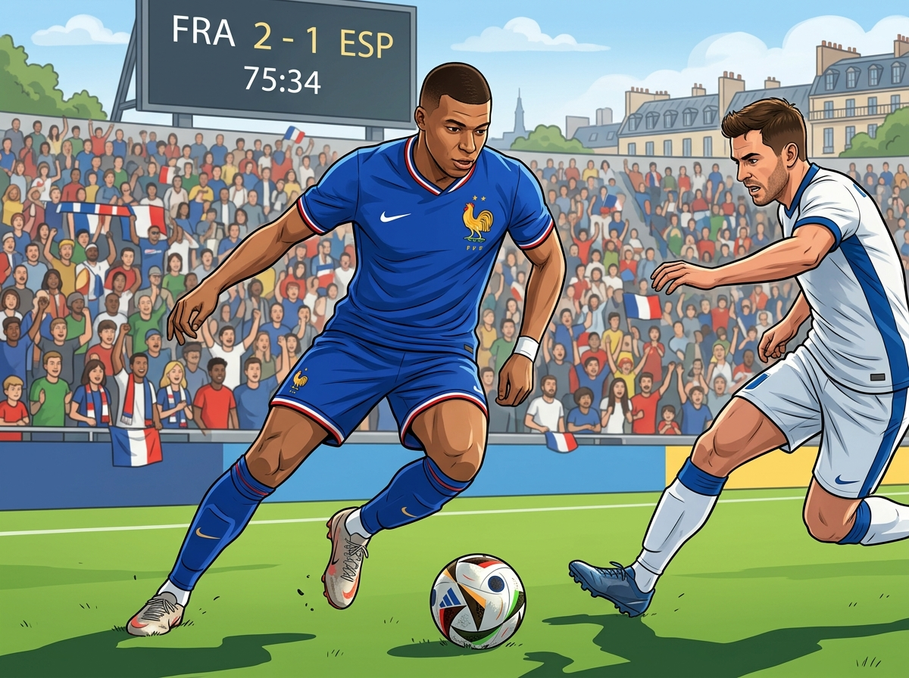
Schule in FrankreichIn Frankreich beginnen die Kinder die Schule schon mit drei Jahren in der école maternelle, das ist eine Art Vorschule. Die richtige Grundschule heißt école. Mittwochs haben viele Kinder am Nachmittag frei. Dafür ist die Schule an den anderen Tagen oft bis zum späten Nachmittag.
Grüne Wörter für die Appécoleab drei JahrenVorschulemittwochs freilanger Schultag
Markt und EssenIn Frankreich kaufen viele Familien gern frische Sachen auf dem Markt ein. Es gibt Obst, Gemüse, Käse und frisches Brot. Das Mittagessen ist oft wichtig und dauert länger. Zum Nachtisch gibt es gern Käse oder ein Stück Baguette.
Grüne Wörter für die AppMarktfrisches ObstKäseBaguetteMittagessen
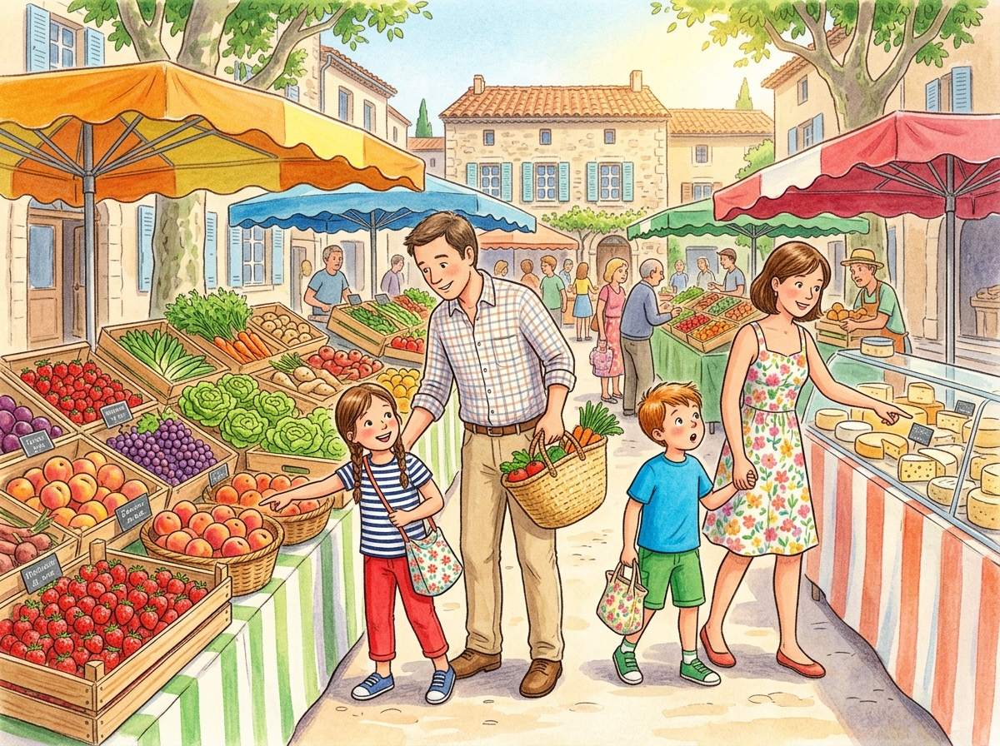